Estou constantemente viajando desde abril de 2023. Desde então, não tenho uma casa fixa e estou sempre em movimento. Depois de dois anos vivendo em São Paulo (SP) e três anos no Rio de Janeiro (RJ), essas duas cidades, junto com Sorocaba (SP), onde nasci e minha família vive, acabaram se tornando parte da minha rota oficial de retorno. Todo o resto acontece entre idas e vindas. Minhas viagens, nos últimos anos, passaram a acontecer em períodos geralmente de dois a três meses.
Argentina 2023, parte 1
A minha primeira grande viagem foi de cerca de dois meses, passando principalmente pela Argentina. No Chile, estive em Santiago → San Pedro de Atacama.
Na Argentina, passei por Salta → San Miguel de Tucumán → Tafí del Valle → Termas de Río Hondo → Buenos Aires → San Carlos de Bariloche → San Martín de los Andes → Buenos Aires novamente → La Plata → Córdoba → Resistencia. No Paraguai, estive em Assunção. De Assunção, fui para Foz do Iguaçu (PR), mas estava chovendo muito. Acabei comprando uma passagem de ônibus para o dia seguinte e voltei para Sorocaba (SP).
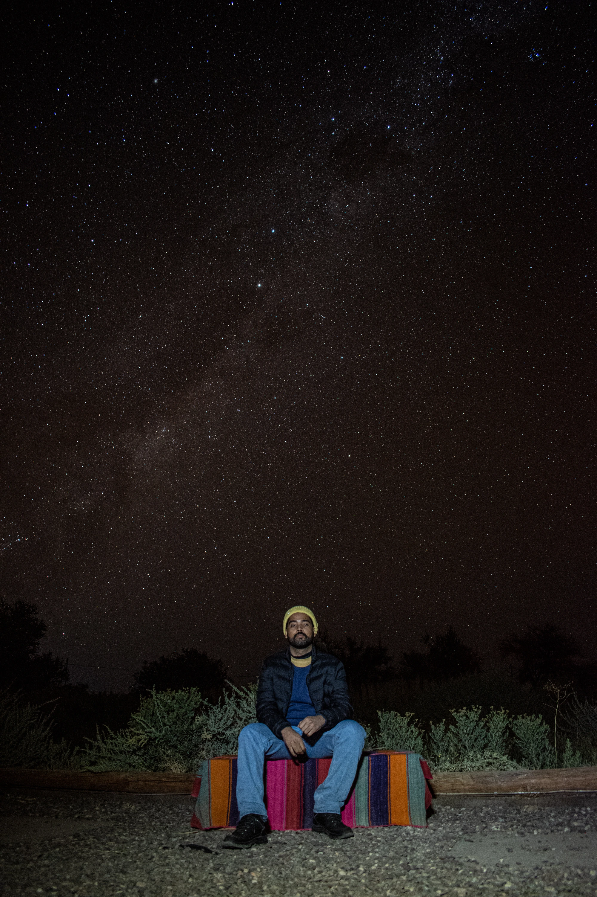
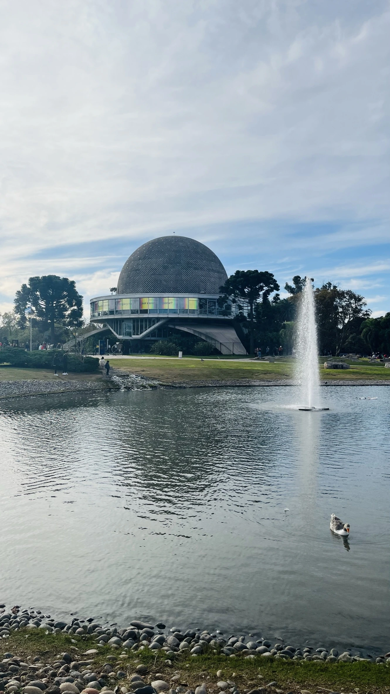
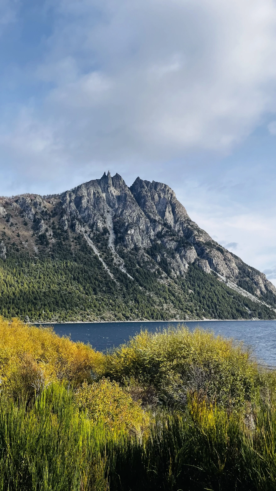
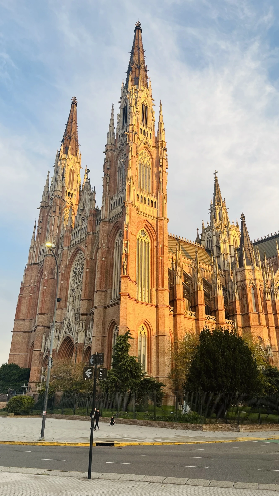
Argentina 2023, parte 2
A primeira parte serviu como um teste para entender se eu conseguiria viajar e trabalhar ao mesmo tempo. Como deu certo e eu queria continuar, deixei oficialmente meu apartamento no Rio de Janeiro (RJ) e voltei para a estrada. Isso ainda em 2023, quando o peso argentino estava muito desvalorizado, o que acabou facilitando bastante a decisão de ficar mais tempo no país.
Passei por Buenos Aires → San Miguel de Tucumán → Córdoba → Cosquín → Villa Carlos Paz → Villa General Belgrano → San Miguel de Tucumán novamente → Buenos Aires → Mar del Plata → Bahía Blanca → Puerto Madryn → Puerto Pirámides → Península Valdés → Esquel → Trevelin → Buenos Aires mais uma vez.
No meio da viagem, tirei férias. Minha amiga Carol foi me encontrar em Buenos Aires e viajamos juntos para Mendoza (AR) → Santiago (CH) → Montevidéu (UY), retornando depois para Buenos Aires. Após um período de descanso, segui novamente para a Patagônia, passando por Ushuaia → Río Gallegos → El Calafate → El Chaltén, antes de voltar para Buenos Aires. Já em dezembro, passei duas semanas no Paraguai, em Assunção, visitando o Marcelo, que eu havia conhecido na viagem anterior. De lá, voltei para o Brasil, encerrando essa segunda temporada.
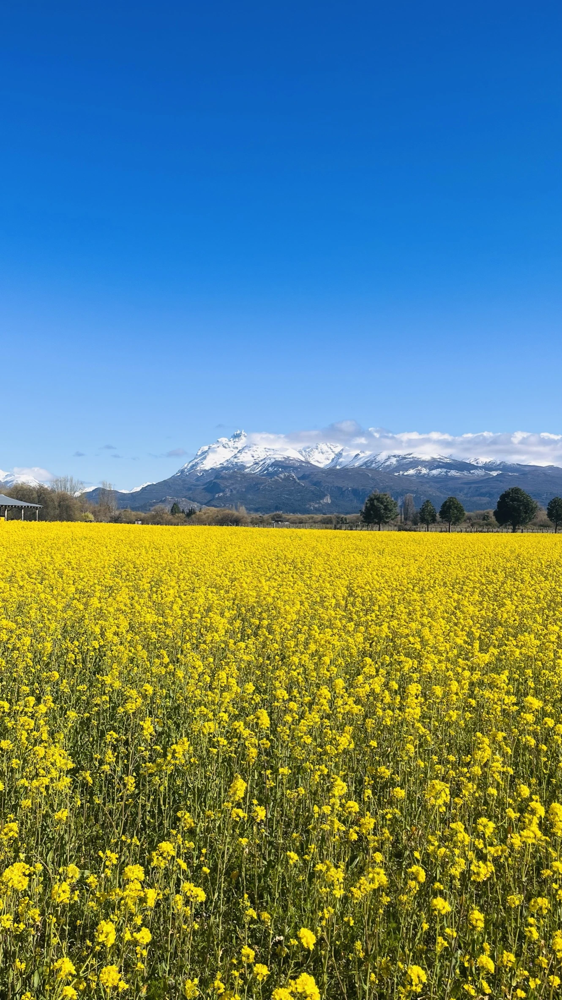
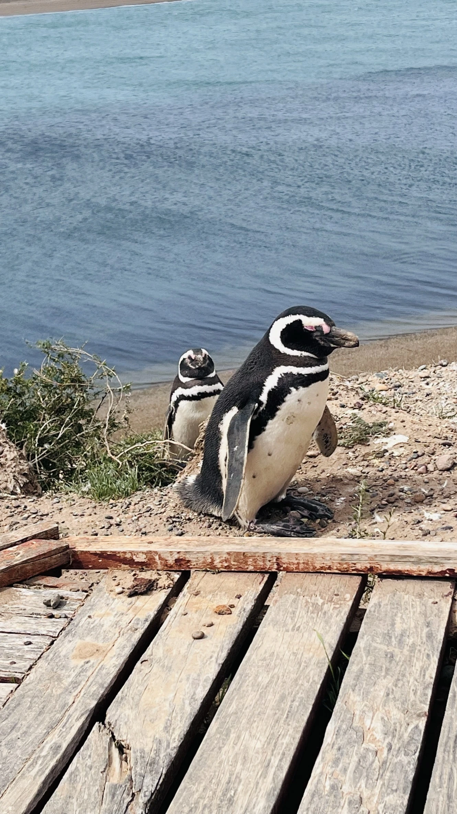
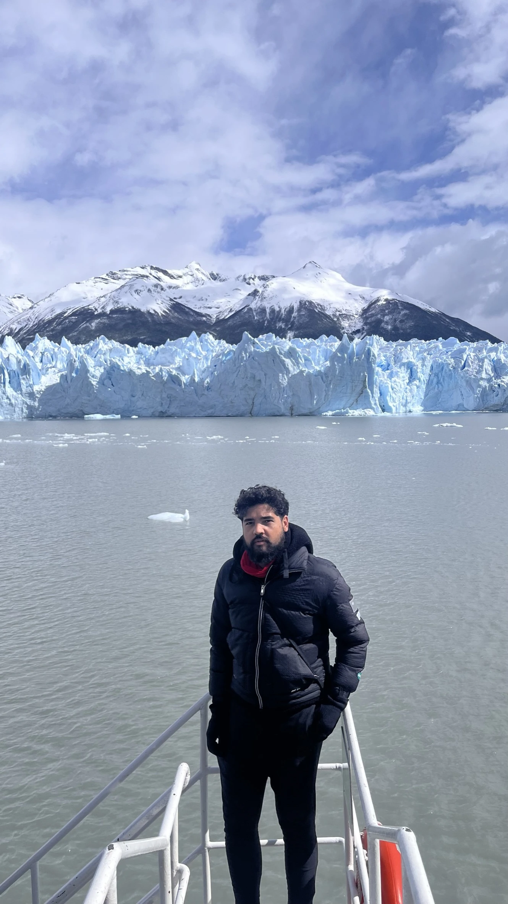
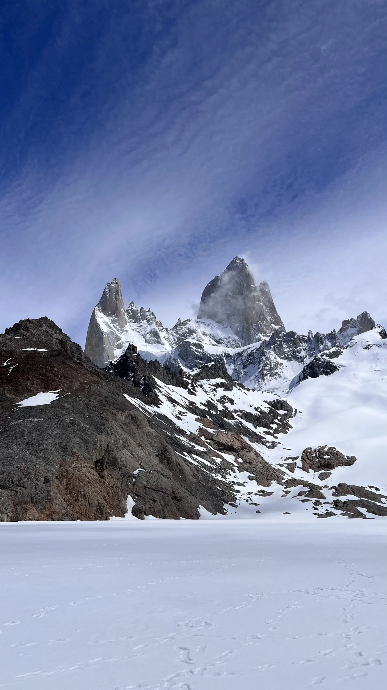
Verão brasileiro, início de 2024
O fato de não ter uma casa fixa e já morar há anos fora da casa dos meus pais faz com que eu me sinta um pouco visitante ali (fora as crianças gritando e o calor que faz). Com isso, depois de pouco tempo, já tenho vontade de viajar novamente.
Logo no começo do ano, fiz uma viagem curta para Ilhabela (SP), onde fiquei alguns dias com amigos. Depois veio o principal evento do período, o carnaval no Rio de Janeiro (RJ). Minha amiga Lauren, americana que conheci no Atacama, veio passar o carnaval comigo. Depois de dias intensos, planejamos um descanso em Florianópolis (SC). Como de costume, eu não tinha passagem de volta comprada e, de última hora, consegui uma saindo de Curitiba (PR). Saí de Florianópolis → Curitiba → Sorocaba (SP).
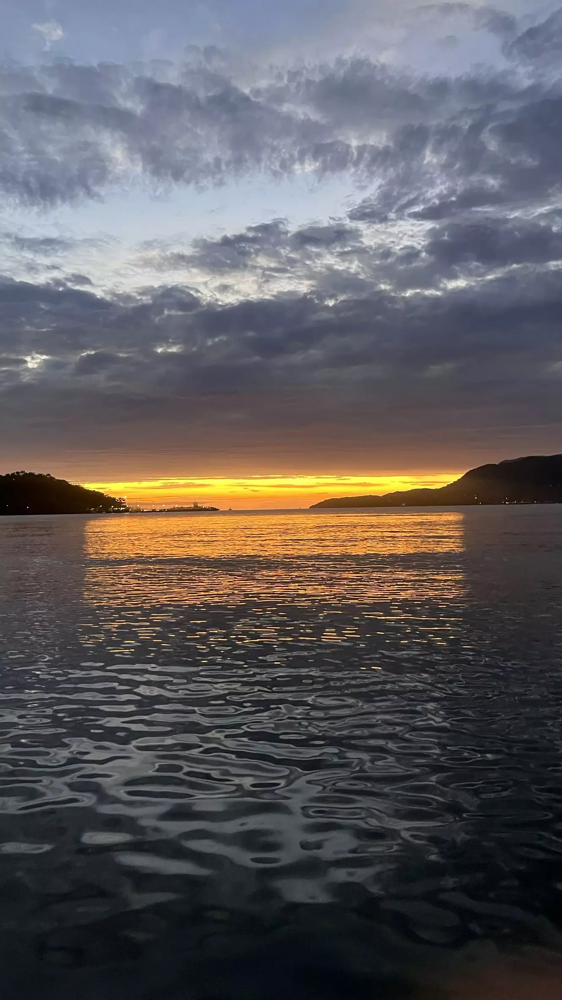
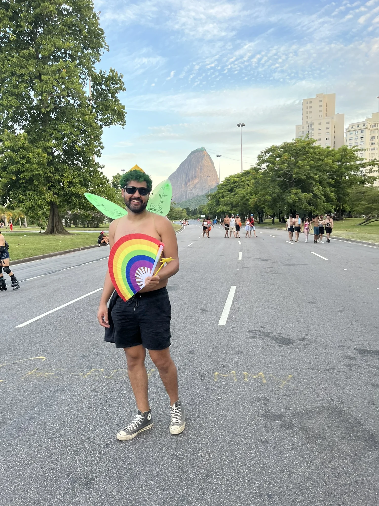
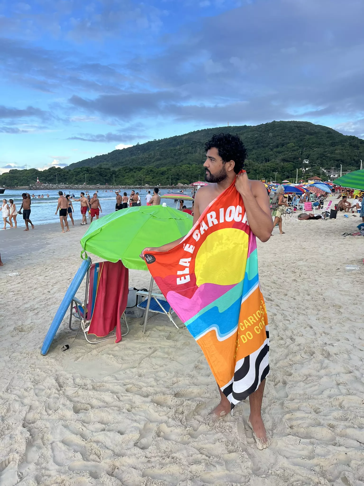
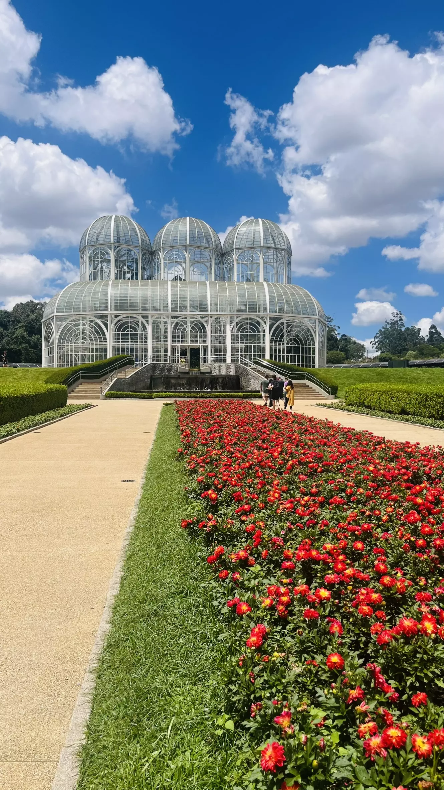
Argentina 2024
Mais uma vez sem vontade de ficar parado, com saudades da Argentina e com a desculpa de ir ao Lollapalooza Argentina, voltei para lá. Passei por Buenos Aires → San Miguel de Tucumán → San Salvador de Jujuy → Purmamarca → Salta → San Miguel de Tucumán novamente → Buenos Aires.
Essa viagem terminou mal. Eu não havia contratado serviço viagem e acabei pegando dengue. Com os hospitais lotados em Buenos Aires, comprei uma passagem para o dia seguinte para Puerto Iguazú, atravessou a fronteira e fui atendido em Foz do Iguaçu (PR). Fiquei dois dias passando muito mal em um quarto de hotel e depois consegui voltar para Sorocaba (SP) para me recuperar. Em cerca de vinte dias, começaria a minha primeira Eurotrip.
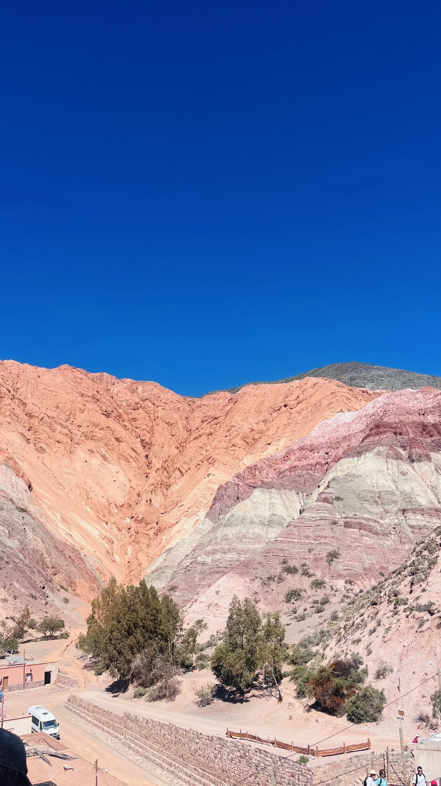
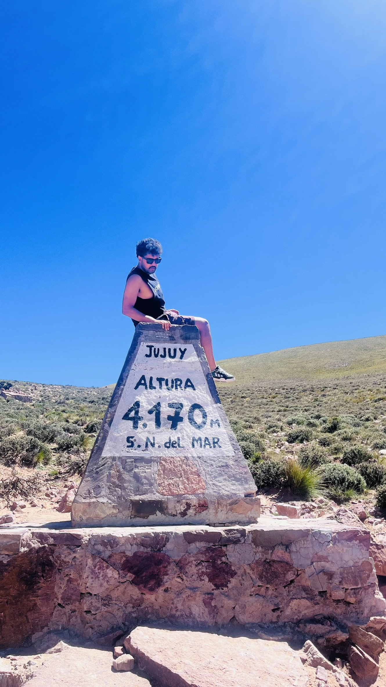
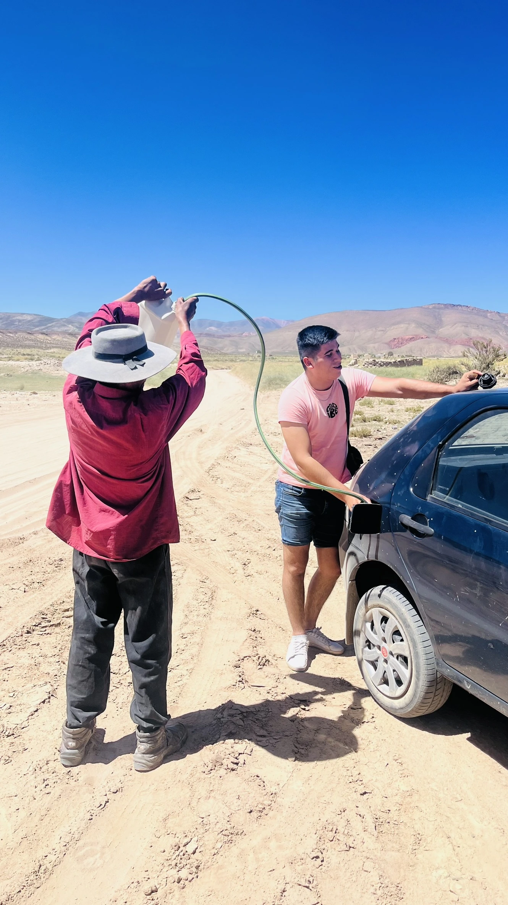
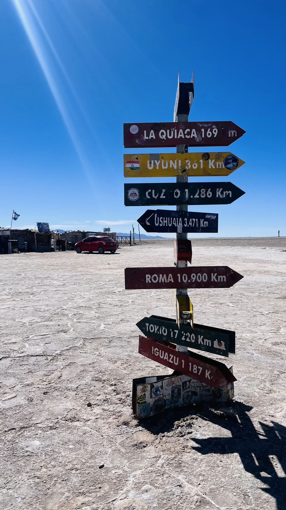
Europa 2024
Fui para a Europa sem passagem de volta e sem data definida para retornar. A ideia era aproveitar ao máximo. Passei por Lisboa (PT) → Madrid (ES) → Barcelona (ES) → Paris (FR) → Berlim (DE) → Praga (CZ) → Brno (CZ) → Linz (AT) → Salzburgo (AT) → Budapeste (HU) → Escópia (MK) → Tessalônica (GR) → Atenas (GR) → Chios (GR).
A partir de Chios, segui para a Turquia, onde passei cerca de um mês entre Esmirna → Istambul → Göreme → Avanos → Nevşehir → Antalya, retornando depois para Istambul. Depois disso, voltei para o leste europeu, passando por Bucareste (RO) → Brașov (RO) → Prejmer (RO) → Bran (RO) → Bucareste novamente → Sófia (BG) → Escópia (MK) → Pristina (XK) → Tirana (AL) → Podgorica (ME) → Sarajevo (BA) → Dubrovnik (HR). Foi em Dubrovnik que decidi voltar para o Brasil. Comprei uma passagem saindo de Paris dali a vinte dias. Nesse intervalo, passei por Poznań (PL) → Berlim novamente → Paris (FR). A Eurotrip terminou após quatro meses.
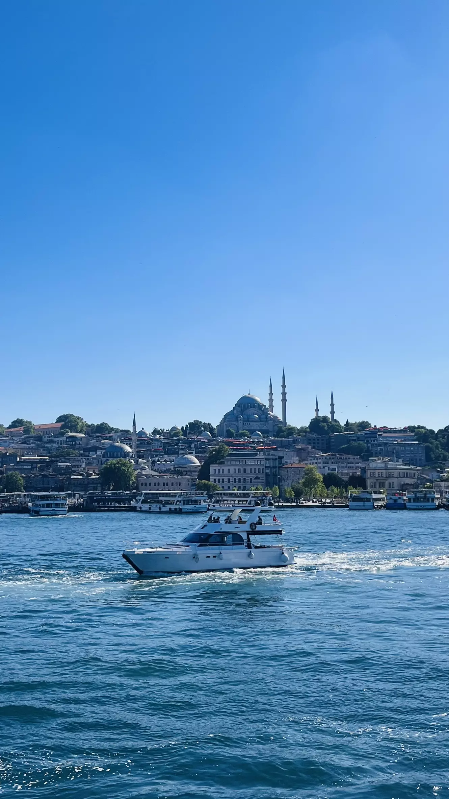
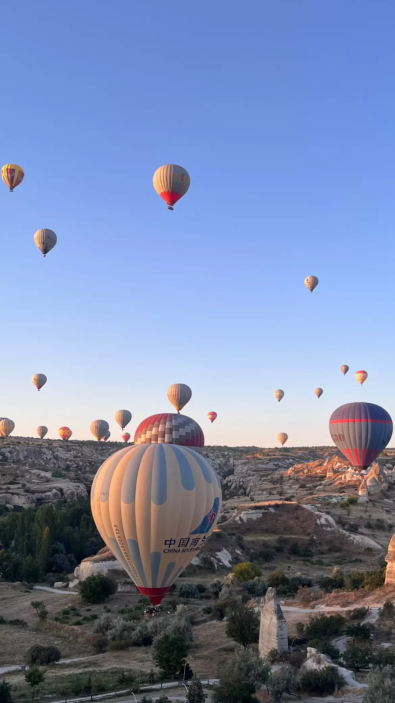
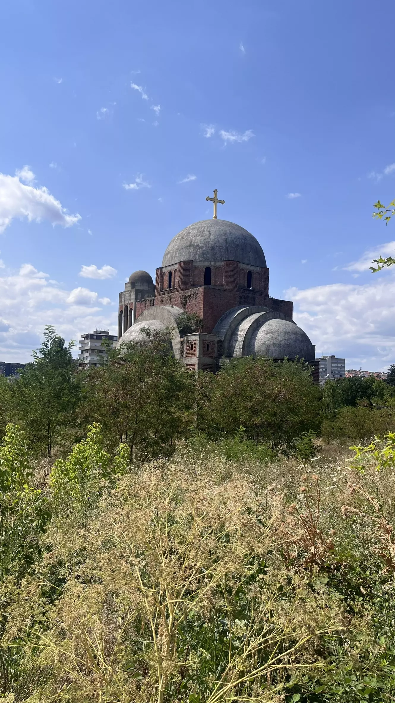
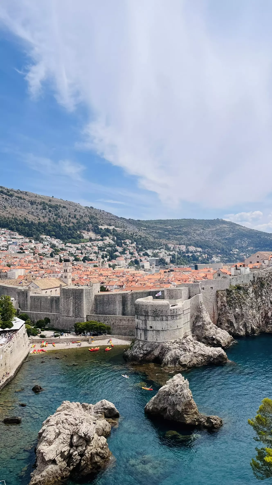
Nordeste do Brasil, 2024
Uma viagem que deveria ser rápida para Salvador (BA) acabou se estendendo por quase cinquenta dias pelo Nordeste. Passei por Salvador (BA) → Maceió (AL) → Barra de Camaragibe (AL) → São Miguel dos Milagres (AL) → Maragogi (AL) → Praia de Tamandaré (PE) → Praia dos Carneiros (PE) → Porto de Galinhas (PE) → Recife (PE) → Olinda (PE) → Praia de Pipa (RN) → Natal (RN) → Fortaleza (CE) → Jericoacoara (CE) → Parnaíba (PI) → Barreirinhas (MA) → São Luís (MA).
Eu tinha uma passagem comprada saindo de Belém (PA), mas não faria sentido correr. De São Luís (MA), segui de ônibus até Natal (RN), depois para Praia de Pipa (RN), onde reencontrei o Eloi, amigo francês que havia conhecido em Jericoacoara. Ficamos uma semana juntos e seguimos para João Pessoa (PB), de onde voltei para São Paulo (SP) para passar o Natal em família.
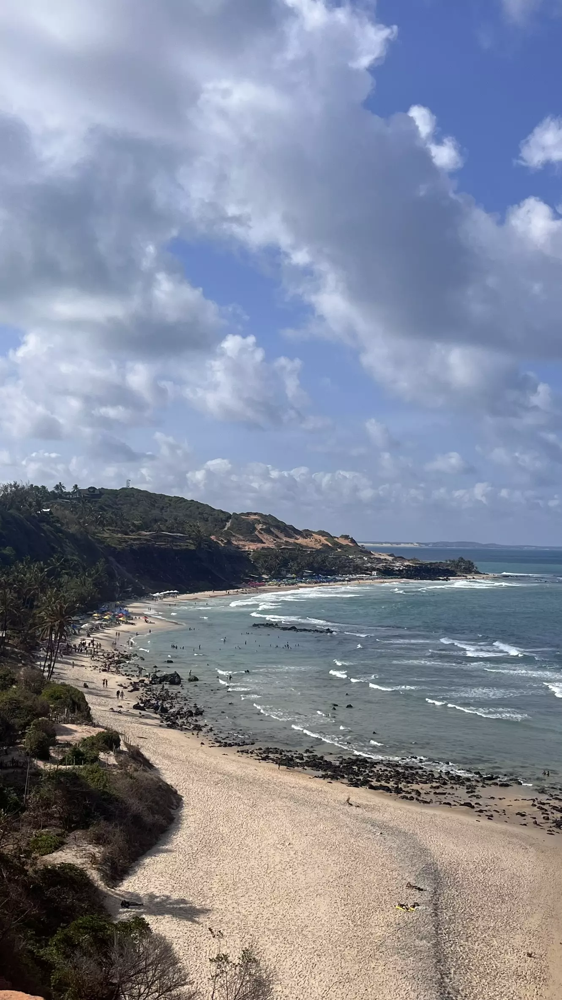
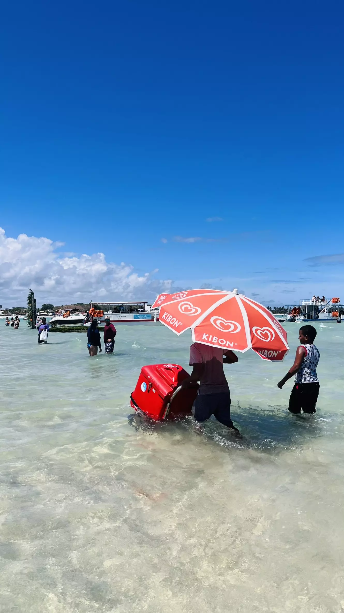
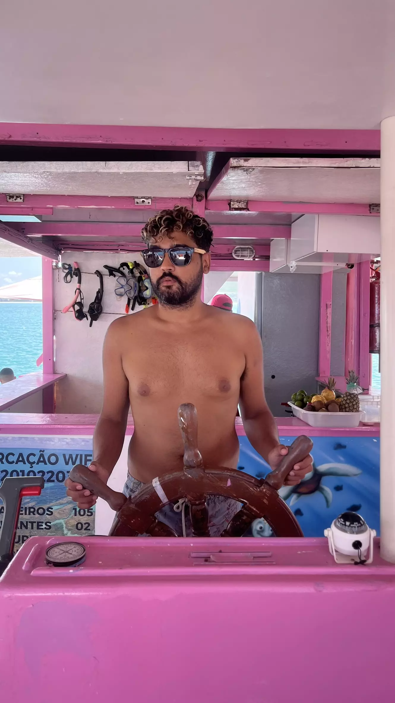
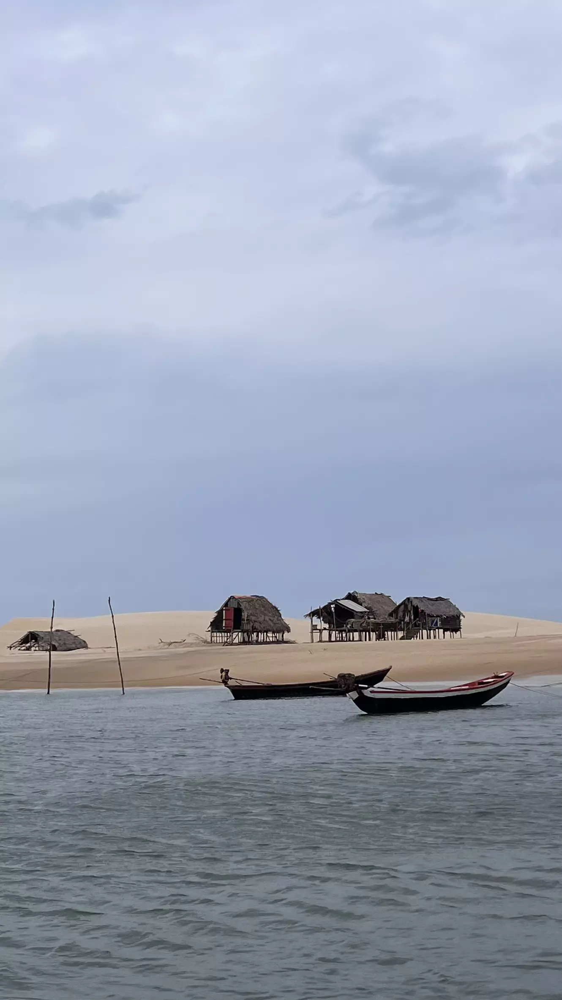
Foz do Iguaçu, outubro de 2024
Em outubro de 2024, fiz uma viagem curta de Sorocaba (SP) para Foz do Iguaçu (PR), ida e volta, para passar cerca de uma semana com o Marcelo. Apesar de já ter passado duas vezes por Foz anteriormente, essa foi a primeira vez em que consegui parar de fato. Finalmente visitei as Cataratas do Iguaçu e atravessei a fronteira para conhecer Ciudad del Este (PY).
2025
Como explico no Travel Nomad Wrapped 2025, este foi um ano em que estive em menos localidades, mas por mais tempo. Ainda assim, fiz duas temporadas em Buenos Aires e duas viagens para a Europa.
O que esperar de 2026?
Principalmente um novo emprego.
No momento, estou focado em empreender em um negócio próprio, mas sigo aberto a trabalho remoto, oportunidades presenciais ou projetos temporários, modelo que acabou definindo boa parte de 2025.
Independentemente do formato, sigo otimista com o que vem pela frente.
A jornada em números
Entre 2023 e 2025, passei por cerca de trinta países, mais de noventa cidades e três continentes. A Argentina foi o país em que mais estive, com Buenos Aires funcionando como uma base recorrente.